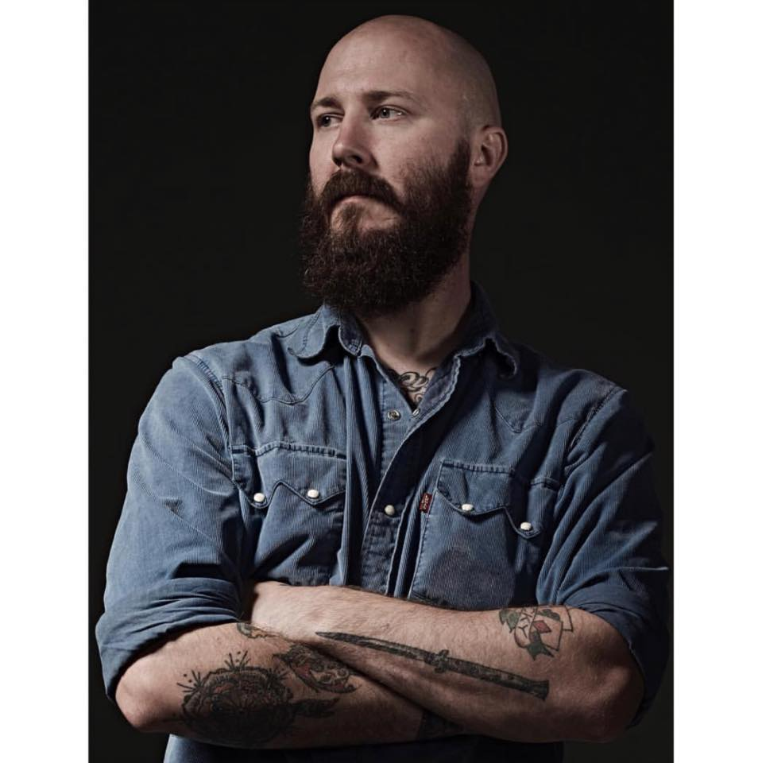

Kyle Miller

I am a hardworking individual who works well with others but it self-motivated
Education
- Waverly-Shell Rock High School
- Woz U
Work Experience
- Vontas - Senior Field Service Technician (2019-Present)
- Manage crews of up to 6 sub-contractors. Maintain and install key software and hardware components
for city buses across the U.S. and internationally.
- Project lead for multiple multi-million-dollar fleet upgrades on or ahead of schedule, as well as on
or under budget.
- Waymo - Vehicle Operations Specialist (Sept. 2018-Jan. 2019)
- Operating an autonomous vehicle collecting data for the engineering, operations, and several other
sub-teams, developing a unique set of operational skills using vehicles running proprietary software
and hardware.
- Operating comfortably in a fast-paced environment working on cutting-edge technology and providing
company sub teams with detailed, accurate feedback while monitoring software systems.
- Yelp - Account Executive (Nov. 2016-Jan. 2018)
- This role provided the ability to lead and drive the technical expertise of the Project Engineering
Team.
- Key duties included team talent development, technical leadership, and critical deployment
oversight.
Skills
- Customer Service⭐⭐⭐⭐⭐
- Organizational Skills⭐⭐⭐⭐
- Leadership⭐⭐⭐⭐⭐
Other